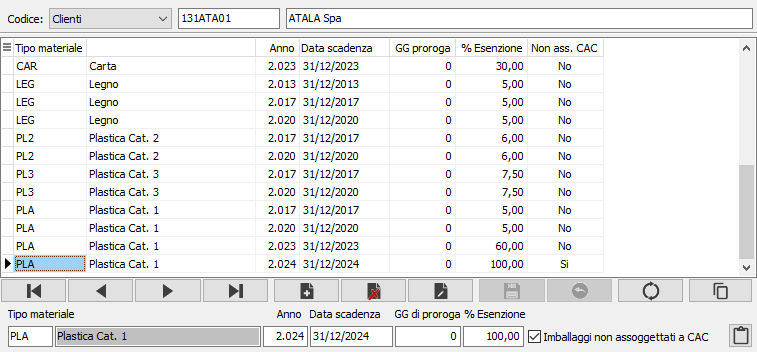

Esenzioni
La tabella consente di gestire le esenzioni presenti per clienti e fornitori. è possibile gestire le percentuali di esenzione specifiche per tipologia di materiale oppure generica (lasciando vuoto il tipo materiale); è necessario indicare anche l'anno, la data di scadenza, gli eventuali giorni di proroga e la percentuale di esenzione; la casella "Imballaggi non assoggettati a CAC" se spuntata indica che il tipo di materiale non concorre al plafond di esenzione e viene escluso dal calcolo del contributo; viene abilitato il pulsante Note per inserire le annotazioni che dovranno comparire in fattura; al salvataggio verrà assegnata la percentuale a 100. Per i fornitori questa funzione viene eseguita in automatico quando si effettua la stampa delle lettere dalla procedura Prospetto attività export. Le esenzioni sono visibili anche dalla pagina CONAI delle anagrafiche clienti e fornitori dove è presente anche un pulsante per accedere a questa finestra. Le esenzioni vengono utilizzate in fase di emissione dei documento; vengono inserite sul primo sconto di rigo ed applicate alle quantità dei materiali per la produzione dei vari prospetti.
